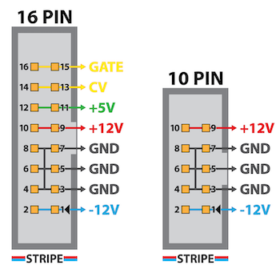
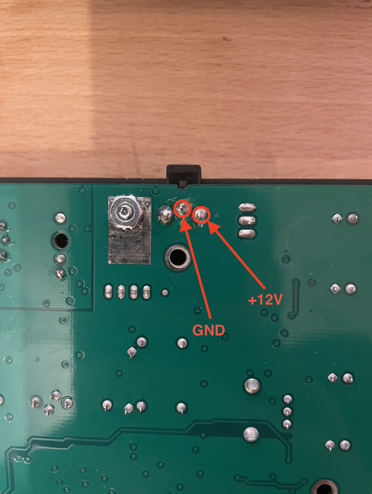
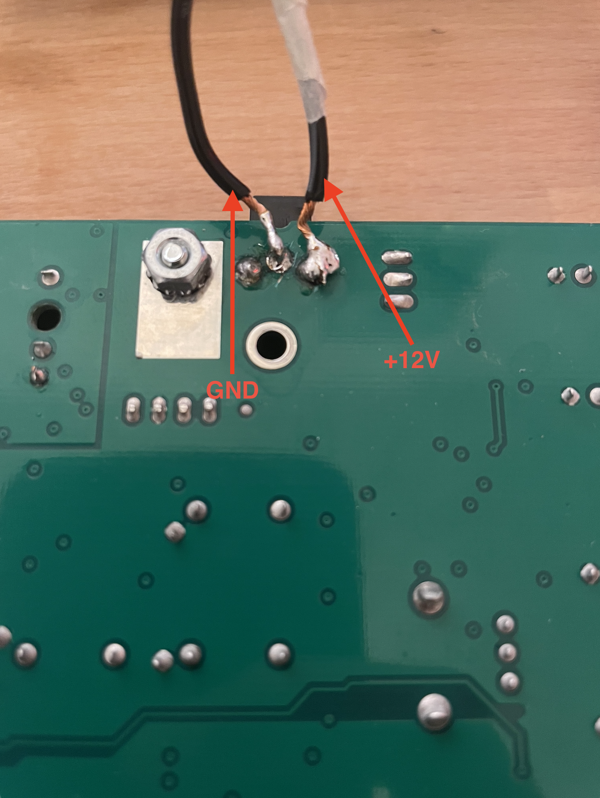
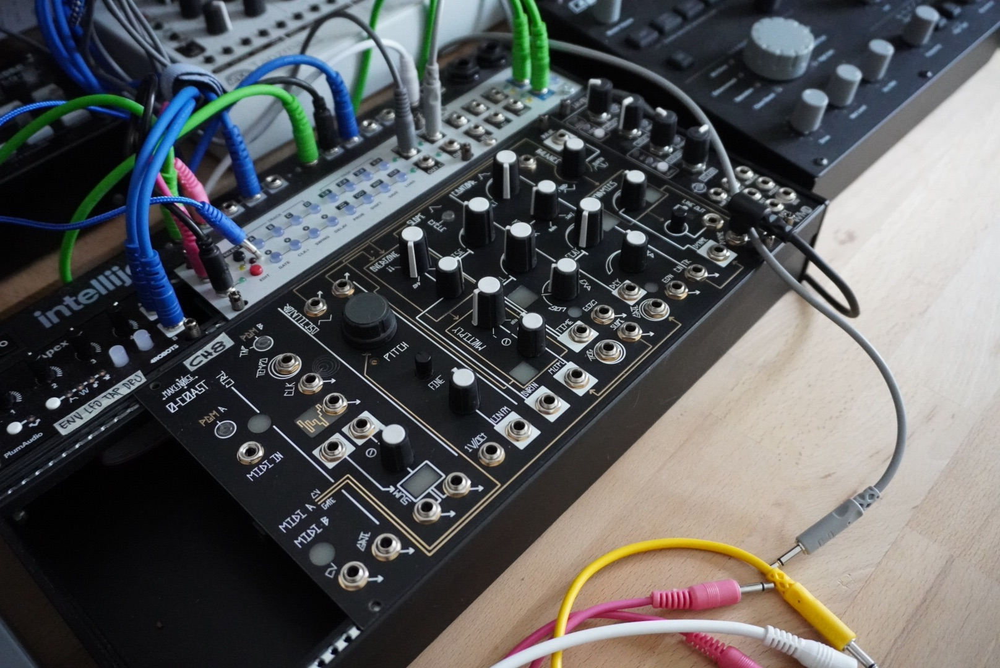

nikola[at]klaxzy.net:/var/log/0-coast eurorack
0-coast eurorack conversion
Make Noise 0-Coast comes with 15V DC power supply and eurorack can supply only +-12V and also has different power connector we should worry about conversion in both cases. The 15V conversion would not be the issue since 0 coast runs on +12V anyway via a KA78R12 voltage regulator, the connector is the part we need to worry about and modify eurorack ribbon cable power and feed to 0 coast power socket.
There are different ways to convert power connector on 0 coast, there is even a pre-built cable from this company in Australia and it coasts AU$27.50, however my preferred way is to solder the power directly to the 0 coast main board bypass the power connector completely.
Eurorack power comes via ribbon cable and majority of the modules uses +-12V DC
On a 0coast main board where the power connector is located I used GND and +12V inputs to solder the ribbon power cable.
On a cable side (16 PIN connector that goes to eurorack power) I used wire for PINs 10 & 9 to get +12V and wire for 6 & 5 to get GND the other side I connected to main board.
Final product with ribbon cable and eurorack power.

I left the 3-PIN 2.1mm power connector on a 0coast main board so unit will still work with regular power if I change my mind to put it back in original case.
Ready to patch and twist...